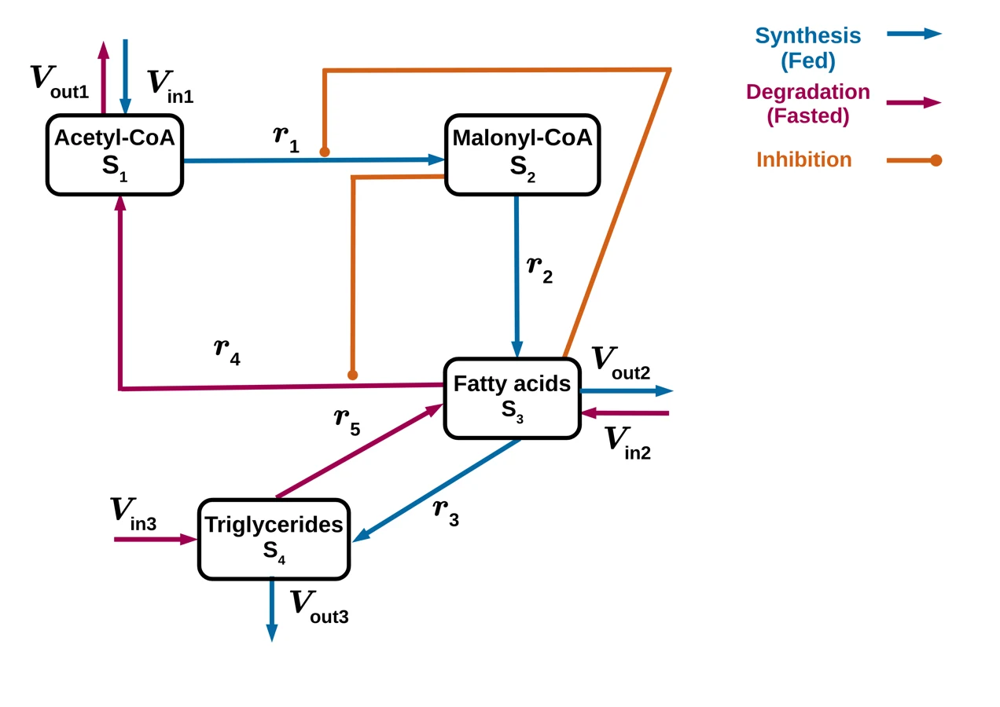

Scientific modelling workspace
Model systems. Run experiments. Interrogate evidence.
FokoLab connects mechanistic simulation, stochastic models, optimisation, inference, statistics and scientific visualisation without hiding assumptions or numerical diagnostics.


Scientific systems
Enter through the system you want to understand.
The laboratories are organized by scientific question rather than by software feature alone. Each route keeps methods, assumptions and evidence close to the model.

C3–C4 adaptation & physiology
Public simulation replays, climate scenarios, sensitivity, Pareto structure and protected research provenance.
T-cell lineages
Generation structure, stochastic branching, activation, division and death.

Fatty-acid reactions
Reaction kinetics, chain elongation, enzyme occupancy and metabolic dynamics.

Evolutionary landscapes
Animated result replays, fitness landscapes, trade-offs and the distinction between search and biological evolution.
Methods
The analytical layer stays within reach.
Use a scientific system first, or enter directly through a method when the mathematical question is already clear.



Evidence loop
A model is useful when it can be challenged.
FokoLab keeps the scientific workflow explicit: define the system, run a controlled experiment, quantify uncertainty, compare with data and revise the model when the evidence demands it.
Research & provenance
See where the models come from.
The Research Hub connects the platform to the underlying scientific work, collaborators, publications and explicit public/private boundaries for unpublished projects.